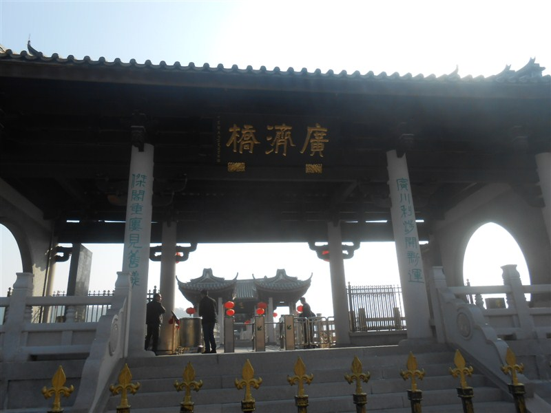
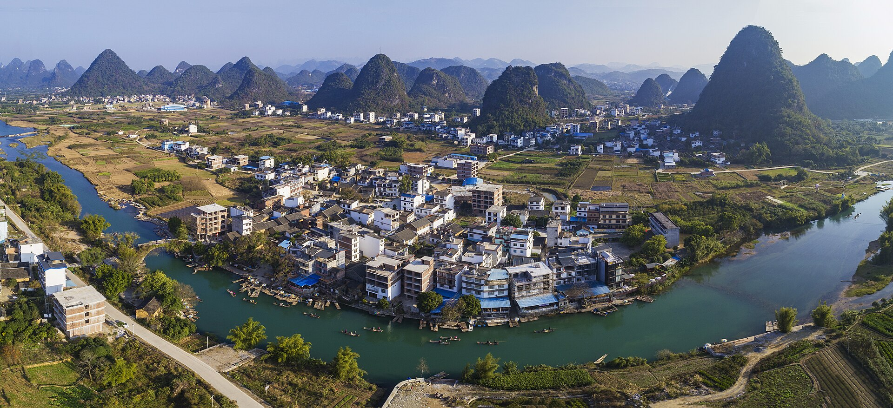

Guangdong
Guangzhou / Kanton
Pierwsza noc przy stacji Guangzhou North i dwie ostatnie w Dongshankou: wille z czasów republiki, kawiarnie, Chen Clan, Shamian i nocny rejs po Rzece Perłowej.
Indeks miejsc
Wersja T: Chaozhou, Hongkong i Shenzhen przed świętami, potem z ekipą Zhuhai i Makau, Yangshuo z Sylwestrem, Zhaoqing i finał w Kantonie. Każde miejsce jest albo noclegową bazą z planu, albo krótkim wypadem bez przenoszenia walizek.
Guangdong
Pierwsza noc przy stacji Guangzhou North i dwie ostatnie w Dongshankou: wille z czasów republiki, kawiarnie, Chen Clan, Shamian i nocny rejs po Rzece Perłowej.

Chaoshan, Guangdong
Baza na 4 noce na starym mieście: herbata gongfu, gęś, wołowy hot pot w Shantou, okrągły dom Daoyun Lou i herbaciane wzgórza Fenghuang.

Hong Kong SAR
Dwie noce w Tsim Sha Tsui przed świętami: Peak Tram, Star Ferry, Central i Mong Kok w normalny dzień roboczy, bez świątecznych tłumów.

Guangdong
Futurystyczne miasto przy granicy z Hongkongiem: rynek elektroniki Huaqiangbei, OCT Loft, park Lianhuashan i wypad na półwysep Dapeng.

Guangdong (Shenzhen)
Zielony, górzysty półwysep na wschód od Shenzhen. Szlak wybrzeżem Dongchong → Xichong (4–5 h) po skałach i zatoczkach, na koniec plaża Xichong.

Guangdong
Spokojne miasto nad morzem przy granicy z Makau. Tu dołącza ekipa: dzień odpoczynku na Qi'ao i promenadzie, potem Makau pieszo przez Gongbei.

Makao SAR
Wypad pieszo przez Gongbei: ruiny św. Pawła, Senado, Taipa i egg tarty. Dla chętnych taras Macau Tower.

Guangxi
Krasowe wzgórza, rzeka Yulong, rowery i tratwy, Sylwester na West Street, a na koniec wschód słońca z TV Tower.

Guangxi
Stara wioska nad rzeką Li z widokiem z banknotu 20 juanów. Tratwy, szlak wzdłuż rzeki, spokojne noclegi nad wodą.

Guangdong
Wapienne skały nad jeziorami tuż przy mieście (Seven Star Crags) i góra Dinghu z lasem, wodospadami i klasztorem. Spokojne dwa dni po Yangshuo, 40 min od Kantonu.

Guangdong
Kulinarny satelita Guangzhou: Shunde food, Foshan ancestral temple, Lingnan Tiandi.